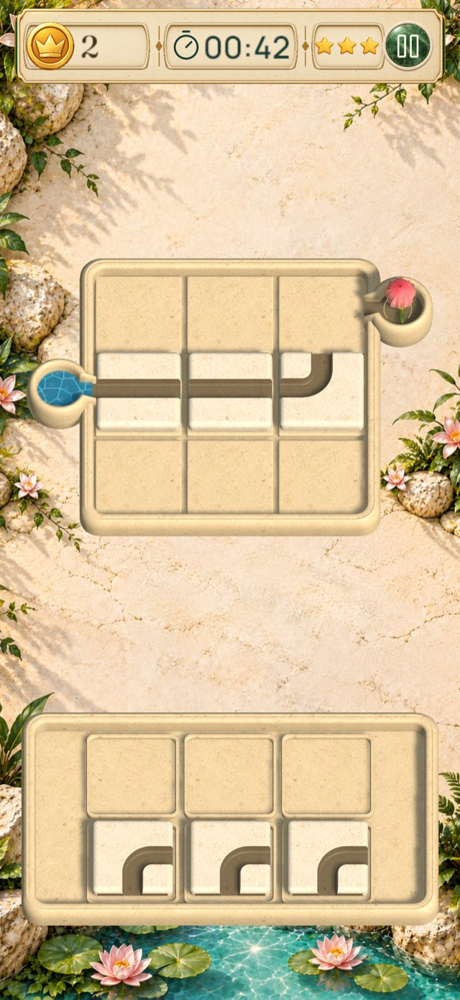
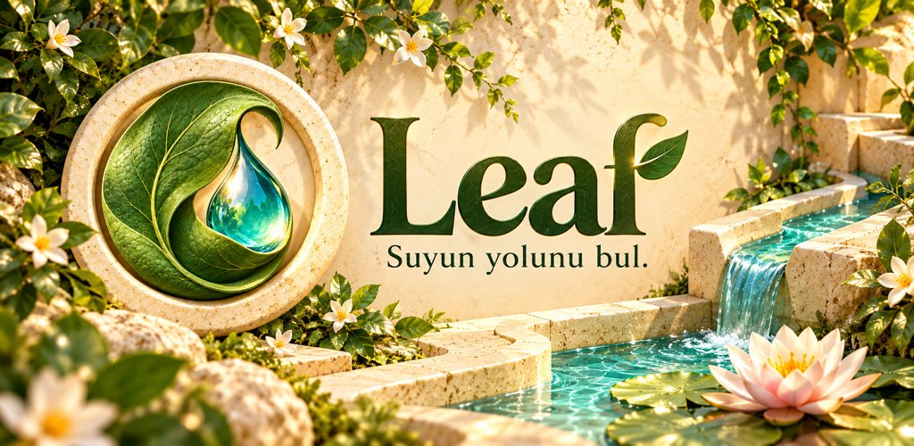

Taşları yerleştir
Parçaları tepsiden oyun alanına sürükle. Kanalların giriş ve çıkışlarını birbirine bağla.
iOS ve Android · Beta sürümü
Taş kanalları yerleştir, bağlantıları tamamla ve suyu çiçeklere ulaştır. Her yeni bahçede farklı bir yol seni bekliyor.

Parçaları tepsiden oyun alanına sürükle. Kanalların giriş ve çıkışlarını birbirine bağla.
Yeni bölgelerde raylar, köprüler, kapılar ve farklı akış kurallarıyla buluş. Geri al ve sıfırla ile başka bir rota dene.
Suyu hedefine ulaştır. Sürene göre yıldız kazan; tamamladığın bölümlere dönerek sonucunu iyileştir.

Taşları yerleştirmeden çiçeklerin açılışına: oyunun akışını 21 saniyede gör.
Tanıtımı YouTube'da izle ↗Beta sürümünde Leaf'i deneyip nerede takıldığını ve neleri sevdiğini bize anlatabilirsin. Henüz herkese açık mağaza yayını yapılmadı.
Cihazına TestFlight'ı yükle, ardından Leaf davet bağlantısını açıp katılım adımlarını izle. Uygunluk ve kullanılabilir sürümler TestFlight'ta gösterilir.
TestFlight davetini aç ↗Kapalı test için Google Play'de kullandığın hesabın test grubunda yer almalı. Henüz erişimin yoksa destek adresimizden katılım iste; ardından aynı Google hesabıyla test bağlantısını aç.
İlerlemen cihazında saklanır. Oyun süreli bulmacalar, banner reklamlar ve mevcut olduğunda isteğe bağlı ödüllü reklamlar içerir. En fazla üç can birikir; eksik canlar 10 dakikada bir yenilenir. Ayarlardan ses, müzik ve titreşim tercihlerini değiştirebilirsin.
Yardım veya beta geri bildirimi için destek sayfasına, veri kullanımı hakkında bilgi için gizlilik politikasına göz at.